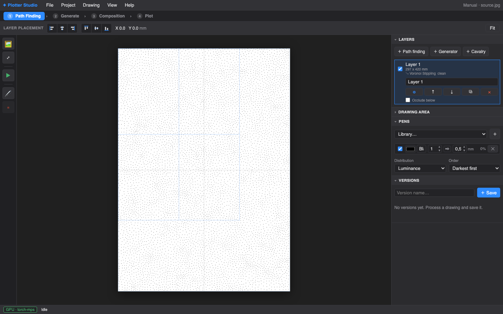

Plotter Studio turns photographs and procedural drawings into pen strokes for a plotter. You compose in layers, preview real pen widths, and drive the machine — all from one window. This manual walks the whole journey.

The tabs across the top are a journey, not a maze — most sessions flow left to right, and you can hop back at any time:
The home base: stack layers on the page — image-driven strokes (43 styles), moves, crops, masks, occlusion.
2 · GenerateProcedural, image-free drawings: geometric compositions and shape fields.
3 · PlotEstimate, place on paper, and drive the plotter — pens, speeds, copies, resume.
The style catalog: every algorithm compared on the same image, plus AI regions and live draft previews.
✦ Painting with FieldsThe deep magic: drive any ◉ parameter with image maps, noise, gradients or a painted mask.
◆ Cavalry tessellationsBake your own tone-responsive repeat patterns from selected Cavalry parameters.
| Action | How |
|---|---|
| Zoom | Scroll wheel — zooms toward the cursor. |
| Pan | Drag anywhere on the canvas background. |
| Fit page | Fit button (top right) or the ⤢ rail button. |
| Move a layer | Drag it. Edges snap to the page and to other layers; the toolbar's align buttons line up selected layers precisely. |
| Nudge placement | The X/Y readout in the toolbar shows the plot placement in mm. |
| Stop anything | The red ■ on the rail halts processing or plotting. |
| Undo | ⌘Z / Ctrl+Z (or Edit → Undo) restores the composition after a layer delete or an unwanted regenerate — up to ten steps back. |
Everything lives in a project: the source image, layers, regions, painted field masks, pen sets and settings. The Project menu creates, renames, opens and deletes them; the current project autosaves as you work.
The Versions panel is your contact sheet: after a result you like, type a name and ＋ Save. Each version snapshots the whole visible page — every layer with its geometry and settings — plus a thumbnail, so you can compare directions and restore any of them later. Rate them, keep notes, stay honest about which experiment actually looked best.
File → Export SVG writes the composed page as a single SVG with one Inkscape layer per pen — ready for any other tool. Export layers (zip) writes one SVG per composition layer plus a manifest, for when another program does the final assembly.
Generation runs on a working raster where one pixel ≈ one pen width, so
"density" always means what the pen can actually resolve. Heavy sampling
runs on the GPU when available — the status bar shows the backend
(torch-mps, cuda or numpy). Output is
vector all the way down: mm-true SVG in, G-code out.